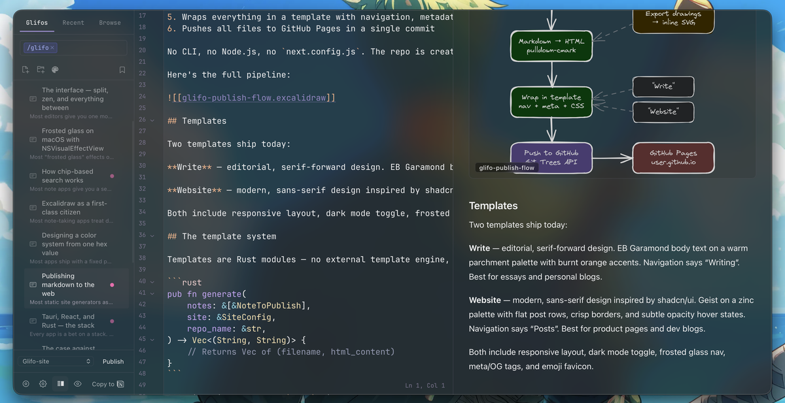
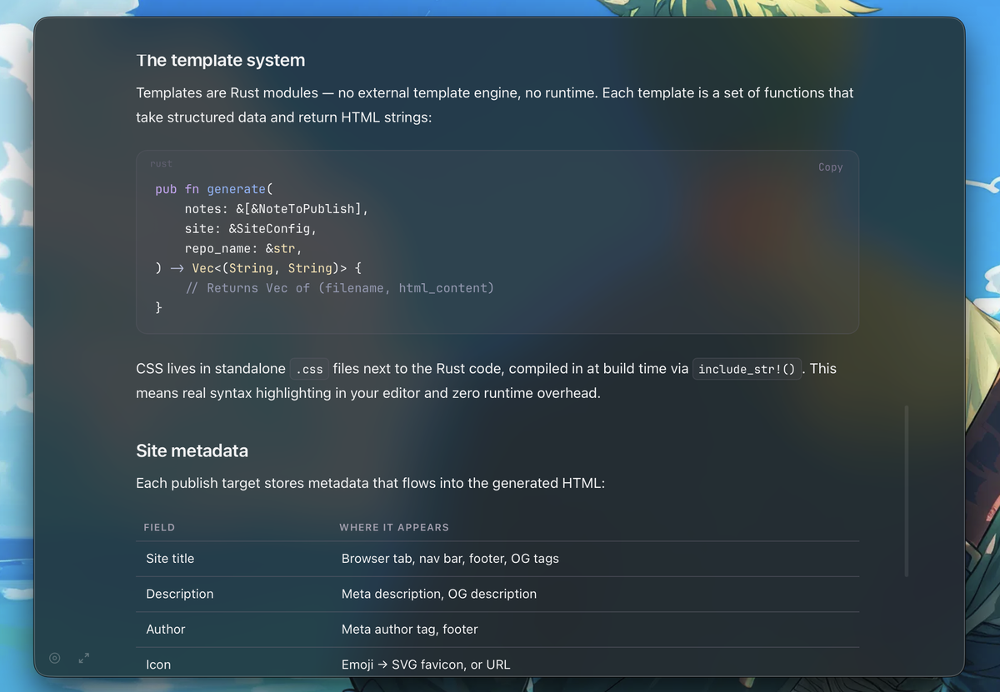
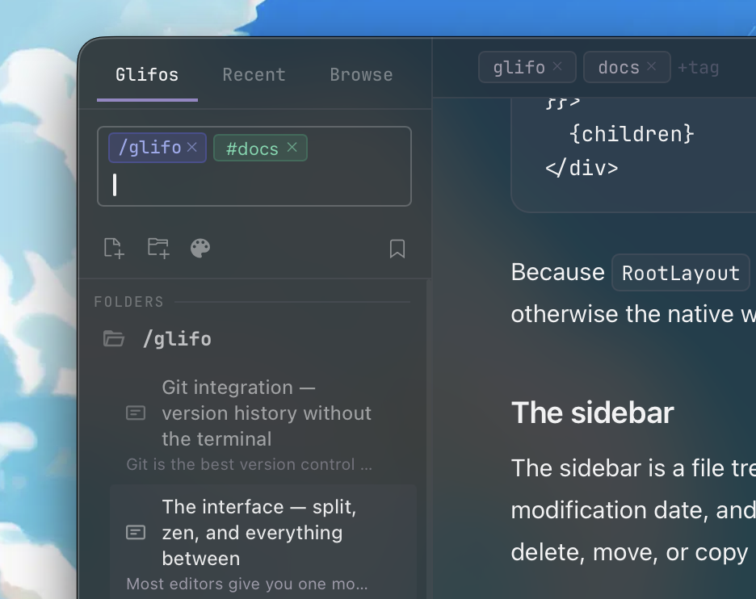

The interface — split, zen, and everything between
Most editors give you one mode: a sidebar and a text area. Glifo gives you three ways to work, each designed for a different kind of attention.
Split mode
The editor supports a side-by-side split — markdown on the left, rendered preview on the right. This isn't a separate "preview" window. Both panes scroll together and update in real time.

Split mode is for editing with intent. You're revising a post, checking that a table renders correctly, or making sure an embedded drawing looks right in context. When you're done, close the preview and you're back to a single pane with zero layout shift.
Zen mode
Zen mode strips everything away. No sidebar, no topbar, no file tree — just your text on a clean surface. The editor expands to fill the window with generous margins, and a pair of minimal controls sit at the bottom edge.

Enter fullscreen from zen mode and the background extends to the edges of the screen. The vibrancy layer still works — your desktop bleeds through if opacity is set low enough. It's a writing environment that feels like it belongs to macOS rather than running on top of it.
The implementation
Zen mode swaps the entire layout. RootLayout unmounts and ZenLayout takes over — a separate component with its own appearance sync, fullscreen handling, and content container:
// ZenLayout centers content with a max-width that adapts to fullscreen
<div style={{
maxWidth: isFullscreen ? '1600px' : '1200px',
margin: '0 auto',
padding: '40px 60px 0',
}}>
{children}
</div>
Because RootLayout unmounts, ZenLayout duplicates the sync_window_appearance call — otherwise the native window tint would go stale when toggling themes in zen mode.
The sidebar
The sidebar is a file tree with structured search built in. Folders collapse, notes sort by modification date, and drawings get their own icon. Right-click for context actions — rename, delete, move, or copy path.

The sidebar collapses to give the editor more room. On narrow windows it auto-collapses; on wide ones it stays put. There's no animation — it snaps, because animations on layout changes feel sluggish in a tool you use all day.
Topbar
The topbar shows the current note title, word count, and action buttons. It's minimal by design — the content area is what matters, and the topbar should inform without competing.
On macOS, the topbar doubles as a drag region. A custom NSView subclass handles window dragging while letting clicks pass through to buttons. This is the kind of detail that makes a web app feel native — you grab the top of the window and it moves, just like every other macOS app.
The best interface is the one you stop noticing. Split mode, zen mode, and the default layout aren't features to discover — they're states to move between as your attention shifts. Writing a draft? Zen. Reviewing formatting? Split. Organizing notes? Default. No modes to learn, no preferences to configure.